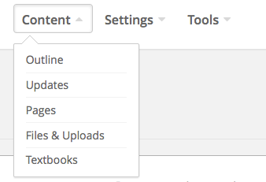
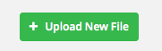
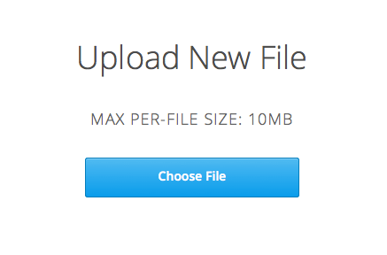
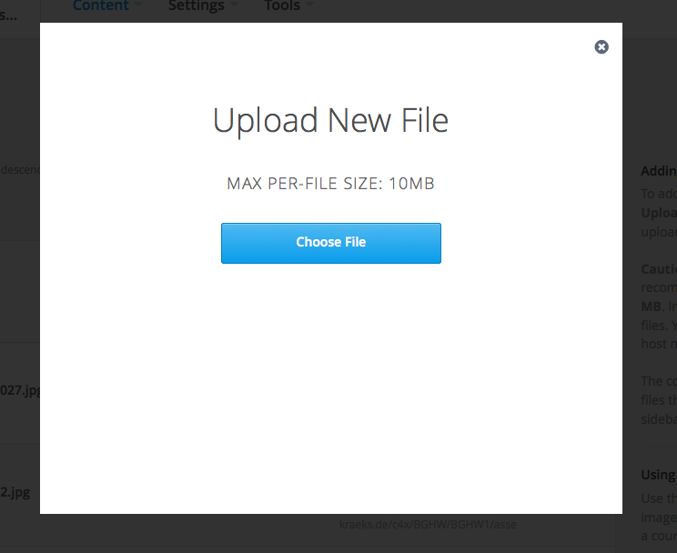

Eine Datei Hochladen / Dateien zu einem Kurs hinzufügen¶
Um externe Dateien wie zum Beispiel Bilder in Ihrem Kurs nutzen zu können, laden Sie die Datei mit Hilfe von Studio in den entsprechenden Kurs hoch und fügen Sie den Link zur jeweiligen Datei in den Kurs Inhalt hinzu. Dateien zum Hochladen dürfen maximal 50 MB groß sein. Falls SIe jedoch Dateien verweden möchten, welche auch nach dem Komprimieren größer als 50 MB sind, kontaktieren Sie bitte Ihren edX Programmmanager.
Um Videos oder Audio-Dateien in Ihren Kurs einzubinden, nutzen Sie beispielsweise YouTube oder eine andere Hosting-Plattform um die Datei zu hosten. Sie können die Datei dann ganz einfach durch ihre URL in Ihren Kurs einfügen.
Eine Datei wie zum Beispiel ein Bild hochzuladen ist sehr einfach und erfolgt in 6 kleinen Schritten:
- Erstellen Sie die gewünschte Datei oder kopieren Sie diese von einem Anderen Speichermedium wie einer Fotoapparat-Speicherkarte auf Ihren Computer.

- Begeben Sie sich auf Studio in den gewünschten Kurs. Gehen sie auf “Content” und wählen Sie dann “Files and Uploads”.

- Wählen Sie “Upload New File”.

- Wählen sie “Choose File” in der Dialog Box
- Wählen sie nun eine oder mehrere Dateien zum hochladen aus und klicken sie anschließend auf “Open”.
Um weitere Dateien hochzuladen wählen sie “Load Another File” und wiederholen sie den Vorgang.

- Um die Dialog Box zu schließen, klicken sie auf das X in der rechten oberen der Box.
Bemerkung
 Wichtig! Gehen Sie sicher dass Sie die Rechte an allen Dateien die Sie hochladen besitzten und dass Sie die Quellen korrekt angeben.
Wichtig! Gehen Sie sicher dass Sie die Rechte an allen Dateien die Sie hochladen besitzten und dass Sie die Quellen korrekt angeben.
Wichtig! Beim generieren der URL für eine hochgeladene Datei wird der Datei-Name Teil dieser und ist somit für jeden der diese Datei benutzt sichtbar. Vermeiden Sie es Datei-Namen zu verwedenden welche Informationen über Inhalte preisgeben, die Sie nicht zugänglich machen wollten.
Wichtig! Falls Sie eine Datei hochladen welche den selben Namen besitzt wie eine bereits hochgeladene Datei wird die ursprüngliche Datei ohne Warnung überschrieben.